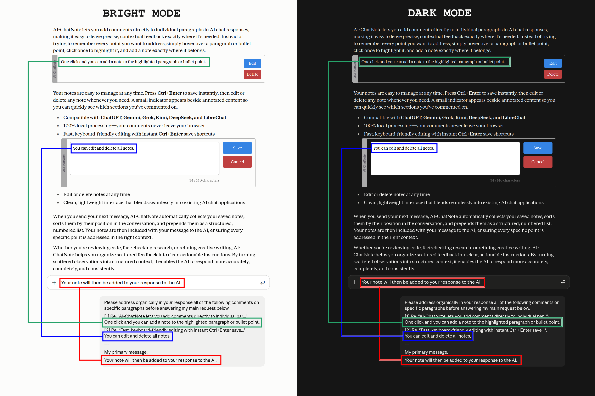

AI-ChatNote
Comment on individual paragraphs in AI chat responses before sending your next message.
AI-ChatNote is a free browser extension for Chrome and Firefox that lets you add inline comments to individual paragraphs or bullet points, then process them all at once for faster, better results. Hover to highlight a passage, click to add a comment, and move on — hit Return and every comment is applied in a single pass.
Works with OpenAI, Anthropic, Google AI and X.
See it in action
How it looks
